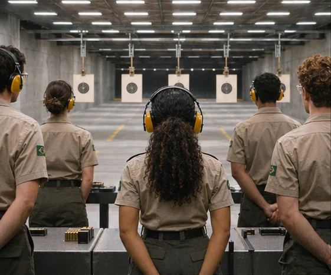
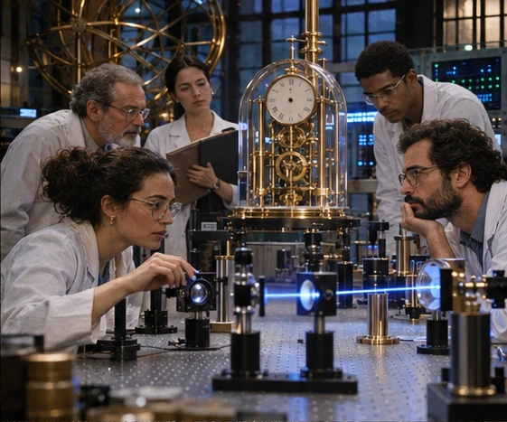

Primeiro semestre
Física do tempo, leitura de fontes e comportamento em campo. A rotina diária de atividade física alterna corrida, mobilidade e jogos cooperativos.
CURRÍCULO DA ACADEMIA

Todos os agentes começam na mesma turma. A escolha de época acontece depois do primeiro ano.
O anel de cobre marca a formação comum. No encerramento do ano, o Exercício dos Dois Relógios reúne as seis especialidades para investigar um minuto perdido.
Explorar Armas, Quadros e Serviços →

Física do tempo, leitura de fontes e comportamento em campo. A rotina diária de atividade física alterna corrida, mobilidade e jogos cooperativos.
Travessias de laboratório, comunicação de equipe, orientação e exercícios de resposta a imprevistos. A formação militar e operacional trabalha disciplina, liderança e responsabilidade pelo grupo.
O conselho avalia o diário de observação, a participação nos exercícios e o relatório de travessia. Cada cadete apresenta sua preferência de missão.
Todas as turmas continuam cursando Física da Travessia, Ética Temporal e Seminário de Retorno. O laboratório de fontes e o projeto final variam conforme o destino.